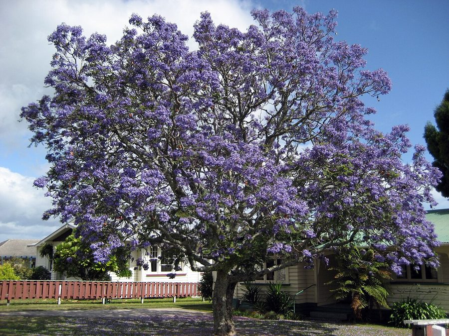

नीली गुलमोहरJacaranda
Jacaranda mimosifolia · Bignoniaceae · FLR-0301

- Scientific name वैज्ञानिक नाम
- Jacaranda mimosifolia D.Don
- Family कुल
- Bignoniaceae
- Hindi हिंदी
- नीली गुलमोहर
- Local names स्थानीय नाम
- jacaranda, jakaranda, neeli gulmohar, nili gulmohar
- Status here यहाँ की स्थिति
- cultivated
- Movement आवागमन
- Resident, here all year
- Known from कहाँ दर्ज
- Others have published records from the wider Awadh–Purvanchal plain, none yet from Basti–Ayodhya अवध–पूर्वांचल से दूसरों के प्रकाशित अभिलेख, बस्ती–अयोध्या से अभी नहीं
- IUCN IUCN
- not evaluated
- Review समीक्षा
- audited and independently read
When to look कब देखें
Present all year. साल भर मौजूद।
Uses and possibilities उपयोग और संभावनाएँ
Drawn from the documented uses in the profile below, where each is labelled traditional, current or a research lead. All uses →
Tell it apart from इनसे अलग पहचानें
नीली गुलमोहर / Jacaranda
Jacaranda mimosifolia D.Don — Bignoniaceae
नीली गुलमोहर — एक सुंदर, पर्णपाती वृक्ष जो दक्षिण अमेरिका से लाया गया है और अब भारत के हर शहर, कस्बे और बड़े गाँव में बाग़ों, सड़कों और पार्कों में लगाया जाता है। पत्तियाँ बहुत सँकरी और छोटी, मिमोसा जैसी, हल्की और पारदर्शी होती हैं। लेकिन सबसे अद्भुत यह पेड़ जब वसंत के महीनों में नीले-बैंगनी फूलों से पूरी तरह ढक जाता है। हज़ारों नीले फूल पेड़ को एक जादुई नीली बादल जैसा बना देते हैं। यह दृश्य अद्भुत होता है।
Quick Identification त्वरित पहचान
| Feature | Description |
|---|---|
| Size | Deciduous tree, 10–20 m tall, spreading crown |
| Leaves | Bipinnate, feathery, fern-like, 30–50 cm long, delicate leaflets |
| Flowers | Bright blue to purple, tubular, funnel-shaped, 5–7 cm, in terminal panicles |
| Flower colour | Brilliant blue to mauve-purple (hence "blue" pui) |
| Fruit | Woody, flat, papery, bean-like pods, 5–8 cm long |
| Bark | Pale brownish-grey, smooth initially, becoming rough with age |
| The test | Feathery fern-like leaves and brilliant blue-purple flowers are unmistakable |
Field tip: In urban areas, parks, and along roads, look for a medium to large tree with very fine, delicate, fern-like bipinnate leaves. In March–May, the entire tree becomes covered with brilliant blue to purple flowers, creating a striking blue haze around the tree.
हिंदी — कैसे पहचानें: बहुत सँकरी, नरम, मिमोसा जैसी पत्तियाँ। नीले-बैंगनी फूलों की भीड़ पूरे पेड़ पर। शहरों और सड़कों में आम।
Morphology आकारिकी
Biometrics (cultivated trees, Indian urban areas):
| Measurement | Range |
|---|---|
| Height | 10–20 m |
| Trunk diameter | 40–80 cm |
| Leaf length | 30–50 cm |
| Leaflet length | 6–10 mm |
| Flower length | 5–7 cm |
| Fruit pod length | 5–8 cm |
Trunk and bark: Straight, with pale brownish-grey bark that becomes rough and slightly fissured with age. Sapwood pale yellow.
Leaves: Alternate, bipinnate, 30–50 cm long. Primary pinnae 15–25 pairs. Leaflets small, linear, 6–10 mm long, numerous, giving an extremely delicate, fern-like appearance. Leaves light green, somewhat translucent. Deciduous; fall March–April.
Flowers: Bright blue to purple (mauve to violet), tubular-funnel shaped, 5–7 cm long, with 5 lobes. Stamens exserted. Flowers in large terminal panicles. Blooming is profuse: entire tree covered with flowers March to May. Very ornamental.
Fruit: Woody, flattened, bean-like pods (capsules), 5–8 cm long, brown, containing many winged seeds. Pods persist on tree for months.
हिंदी: पत्तियाँ दो-पंखदार, बहुत सँकरी, नरम। फूल नीले-बैंगनी, ट्यूबनुमा। फल लकड़ी के, चपटे, सेम जैसे।
Behaviour & Ecology व्यवहार और पारिस्थितिकी
Jacaranda is a deciduous tree introduced from South America, widely cultivated in Indian cities, towns, and gardens. It flowers before producing new leaves in spring, creating a spectacular display. The tree is highly valued as an ornamental for its brilliantly coloured flowers and feathery foliage. It grows rapidly and tolerates urban pollution and poor soils. The flowers are visited by bees and some bird species. The tree is drought-hardy once established and suitable for hot, dry climates.
हिंदी: दक्षिण अमेरिका से लाया गया। वसंत में नीले फूलों के लिए प्रसिद्ध। बड़ी तेजी से बढ़ता है। शहरों में प्रदूषण सहन करता है।
Life Cycle / Phenology जीवन चक्र
| Month / season | Event |
|---|---|
| January–February | Leaves fall; tree appears bare |
| March–May | Flowering (before leaf emergence); profuse blue-purple blooms |
| April–May | New leaves flush as flowering declines |
| June–September | Fruit development and maturation |
| October–December | Dormancy; dry conditions |
| 6–8 years from seed | First flowering |
Seedlings germinate readily from winged seeds after monsoon. Growth is moderate to rapid. Lifespan reaches 50–70 years in cultivation.
हिंदी: जनवरी में पत्तियाँ गिरती हैं। मार्च से फूल (पत्तियों से पहले)। अप्रैल में नई पत्तियाँ। सितंबर तक फल पक जाते हैं।
Associated Species / Interactions संबंधित प्रजातियाँ
- Pollinator visitors: Asian Honey Bee and other insects on flowers.
- Urban ornamental: Often planted alongside gulmohar for contrast in colour.
Pests and Diseases कीट और रोग
- Leaf-eating insects and beetles; rarely cause serious damage.
- No significant fungal diseases in Indian conditions.
- Generally pest-resistant and low-maintenance.
Agricultural / Human Relevance कृषि प्रासंगिकता
Jacaranda is valued almost exclusively as an ornamental tree. It is planted extensively in parks, gardens, roadside avenues, and institutional grounds for its stunning blue flowers and feathery foliage. The tree provides shade and is aesthetically pleasing year-round, with the bare branches in winter being attractive and the feathery leaves providing dappled shade in summer.
Today. One of the most planted ornamental trees in Indian cities, particularly valued during the flowering season when the entire city appears blue.
हिंदी: सौंदर्य के लिए बाग़ों, पार्कों और सड़कों पर लगाया जाता है। नीले फूलों के लिए बहुत प्रसिद्ध है। कोई व्यावहारिक उपयोग नहीं है, केवल सुंदरता के लिए।
Expected Locally स्थानीय रूप से अपेक्षित
Not a field record. Written from published accounts for eastern Uttar Pradesh. No confirmed local sighting yet — if you have seen it, that is what the atlas needs.
अभी तक स्थानीय पुष्टि नहीं। यह विवरण प्रकाशित स्रोतों से है, किसी अवलोकन से नहीं।
GBIF holds published records from urban areas across Uttar Pradesh. Jacaranda is found in cities, towns, and larger villages in eastern Uttar Pradesh as a planted ornamental tree. It has not naturalized in the region.
Distribution वितरण
Global range: Native to south-central South America (Brazil and Bolivia). Cultivated in tropical and subtropical regions worldwide.
In India: Common in urban areas, parks, and gardens throughout the country, from the plains up to about 1,500 m elevation.
In Uttar Pradesh: Increasingly common in cities and towns, from Lucknow and Agra to smaller towns.
In Basti district / eastern UP: Present in towns and larger villages; less common than in major cities.
Research Questions शोध प्रश्न
- How many Jacaranda trees are planted in your town, and in what locations (parks, roadsides, private gardens)? / आपके कस्बे में कितने जैकरांडा के पेड़ हैं? — Survey and map all trees.
- When does the flowering peak in your area, and does it vary year to year? — Record first-flower dates and flowering intensity for 3–5 years.
- What is the relationship between Jacaranda planting and urban green space or aesthetic planning? — Interview municipal or municipal corporation officials about planting policies.
- Which insects visit the flowers, and at what times of day? — Thirty-minute observations at flowering trees.
- Do Jacaranda seeds germinate in urban environments, or do the trees rely only on cultivation? — Search for seedlings beneath mature trees; track germination.
Similar Species मिलती-जुलती प्रजातियाँ
| Species | How to tell apart | हिंदी |
|---|---|---|
| Silver Oak (Grevillea robusta) | Orange-red flowers; different leaf structure; different family | नारंगी-लाल फूल; विभिन्न परिवार |
| gulmohar (Delonix regia) | Red and yellow flowers; leaflets larger; different tree shape | लाल-पीले फूल; बड़ी पत्तियाँ |
| Neem (Azadirachta indica) | Small white flowers; pinnate (not bipinnate) leaves | सफ़ेद फूल; पंखदार पत्तियाँ |
Field rule: A tree with very fine, delicate, fern-like bipinnate leaves and brilliant blue to purple flowers appearing in spring before new leaves is Jacaranda.
Taxonomy & Classification वर्गीकरण
Original description. Originally described by David Don in 1830 based on specimens from South America. Type locality is Brazil and Bolivia.
Subspecies. Monotypic — no subspecies are currently recognised.
Family and order placement. Order Lamiales, family Bignoniaceae (the trumpet vine family, including Tecoma, Dolichandrone, and others). The genus Jacaranda contains about 50 species, mostly South American, many cultivated ornamentals.
Phylogenetic notes. Jacaranda mimosifolia is the type species of Jacaranda. It belongs to a clade of Bignoniaceae characterised by colourful tubular flowers and bipinnate leaves.
IUCN status rationale. Not evaluated. Widespread in cultivation; not threatened in native habitat.
Photo Gallery फोटो गैलरी
No photos yet — add field photos to media/species/jacaranda/ and run node scripts/sync_photos.js.
Wanted photos:
- Tall tree in full flower (March–May)
- Tree covered with blue-purple flowers
- Flowers in close-up
- Feathery fern-like bipinnate leaves
- Bare tree in January–February
- Woody seed pods hanging on tree
References संदर्भ
- Don, D. (1830). In Sweet, R. The Flower-Garden, vol. 2.
- Sprague, T.A. & Hutton, R. (1915). Index Kewensis, vol. 1. Royal Botanic Gardens, Kew.
- Sahni, K.C. (1998). The Book of Indian Trees. Oxford University Press, New Delhi.
- GBIF Occurrence Data — Jacaranda mimosifolia, India.
- Ornamental Trees and Shrubs: Horticulture literature.
- Bignoniaceae Research: Phylogenetic and horticultural studies.
Source file: species/flora/trees/jacaranda.md